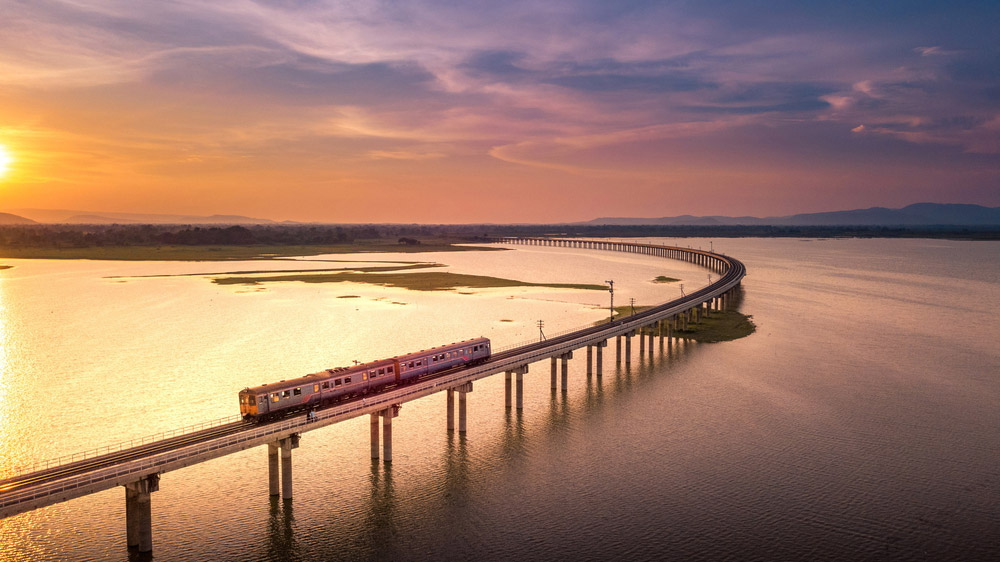

1. รถไฟลอยน้ำ เขื่อนป่าสักชลสิทธิ์
อีกหนึ่งที่เที่ยวที่พลาดไม่ได้เลยก็คือที่นี่ค่ะ การมานั่ง รถไฟลอยน้ำ เขื่อนป่าสักชลสิทธิ์ ที่ ลพบุรี นั่นเองค่ะ โดยทุกๆ ปี การรถไฟแห่งประเทศไทย จะจัดเดินขบวนรถพิเศษนำเที่ยว เป็น เส้นทางขบวนรถไฟนำเที่ยวพิเศษ เขื่อนป่าสักชลสิทธิ์ โดยขบวนรถจะหยุดกลางสันเขื่อนมีเวลาให้นักท่องเที่ยวได้ชื่นชมดื่มด่ำกับความงดงาม ตื่นตาตื่นใจ ถ่ายรูปสวยๆ ฟินๆ กันไปค่ะ งานนี้ได้นั่งรถไฟเที่ยวชิลสมใจ พร้อมได้มุมสวยๆ ถ่ายรูปกลับมาอีกด้วย